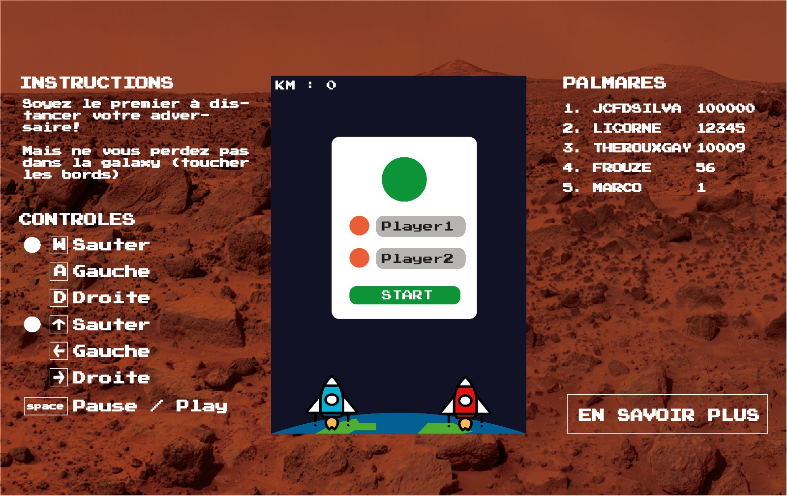

Mockup de votre projet
Par Rita, Vivian et Joao, le 26/02/2019 à 17:18
Le site du jeu comprend :
3 sections réparties sur les côtés : les instructions, les touches de contrôles et le palmares .
Un bouton "en savoir plus" qui mène au site descriptif du projet
Visuellement, le site imite les anciens jeux avec une police pixelisée. Le fond d'écran rappelle le but du jeu (la course vers Mars).
